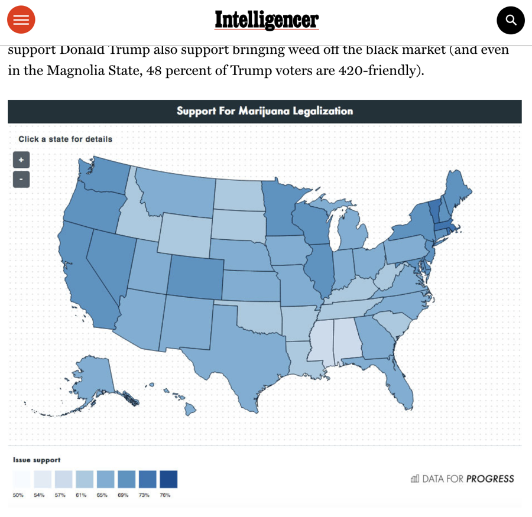
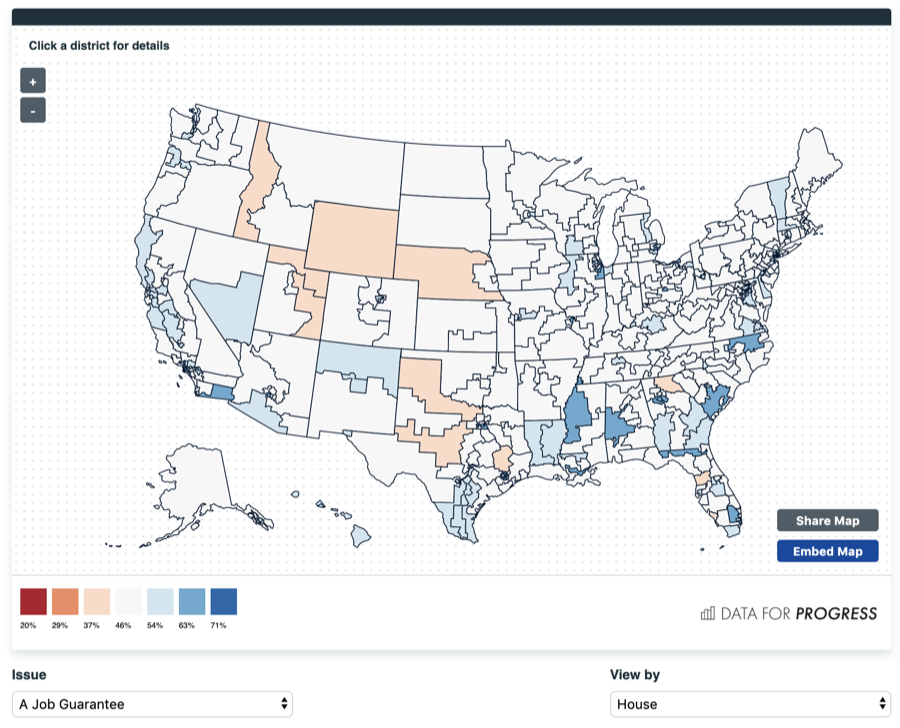
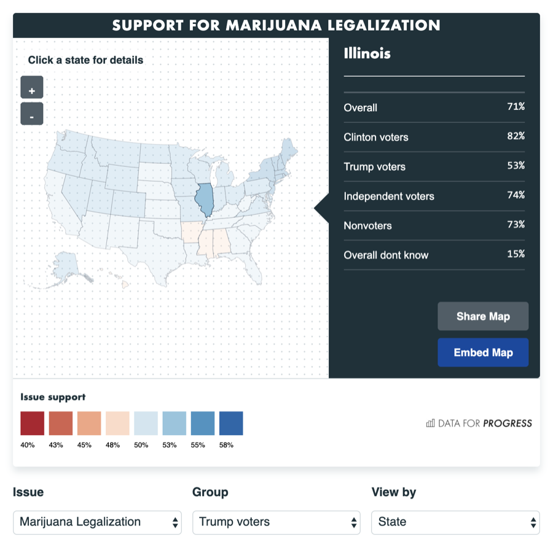

Specimen Nº 03 · Habitat I — Democracy & elections
Data for Progress Maps
Embeddable D3 maps for progressive policy data, fed straight from a Google Sheet — deep links and snapshots included.
- First observed
- 2019
- With
- Noah Manger, volunteering
Mapping the New Progressive Agenda with Data for Progress
Data for Progress is a progressive think tank that uses polling to showcase the popularity and reach of progressive ideas like the Green New Deal and Criminal Justice Reform - and they needed a way to quickly create and share interactive maps that showcased how people across the country responded to progressive policy ideas.
As a volunteer, Noah Manger and I created an embeddable interactive map widget that leveraged D3JS to visualize data from a google sheet - allowing the team at Data for Progress to easily embed a map into their policy presentations. We extended the map further to allow in-widget snapshot generations and deep-linking to specific issues, views, and topographic features.
Plates · from the field



Field notes